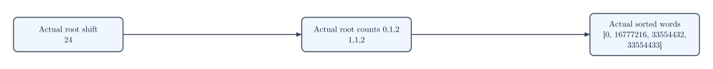
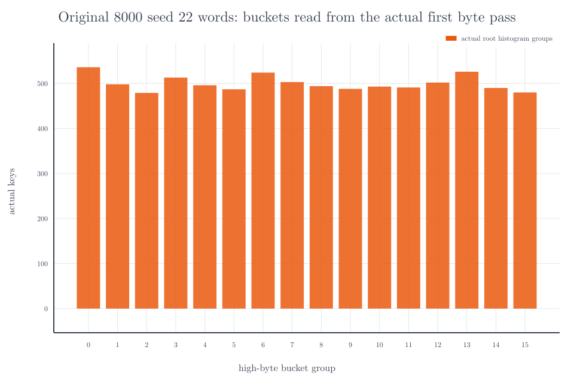
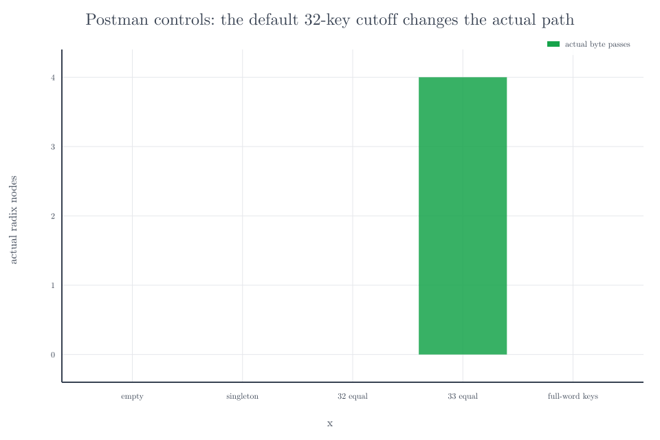
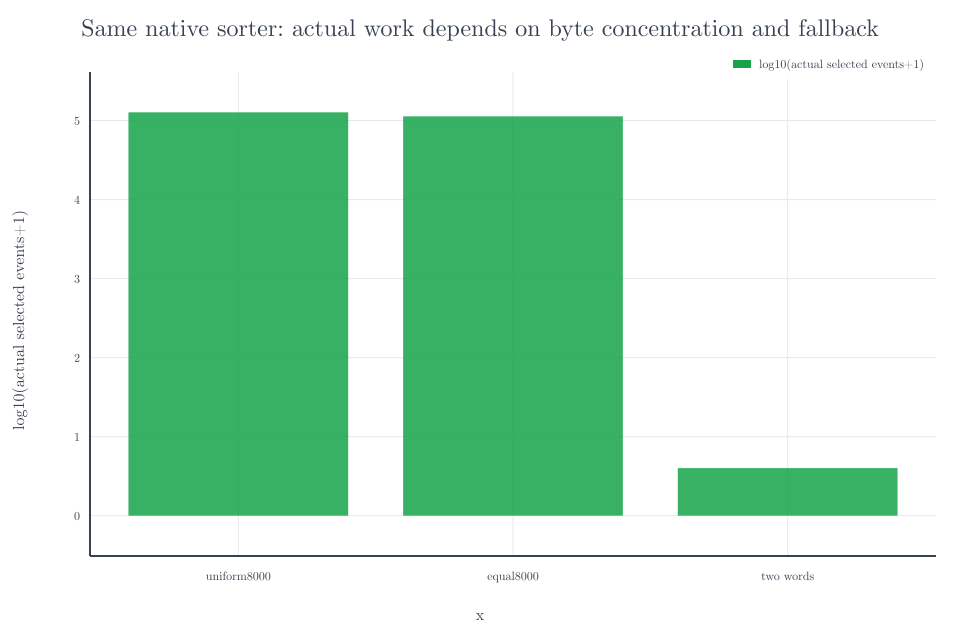

Postman sort: actual byte buckets and insertion fallbacks
Abstract
The native sorter processes unsigned 32-bit keys by most-significant bytes and stably distributes each range into its actual buckets. Small ranges use the historical insertion cutoff 32. The tiny example explicitly sets that cutoff to zero to expose the byte mechanism; the original examples use the unchanged default. Actual node records contain the histogram and prefix offsets used by the producing pass. Synthetic unsigned words make the byte distribution and range controls directly inspectable.
Mechanism and mathematical scope
A tiny actual producing history
The table and native concept diagram read the same producing execution. Every block below is a complete editable C++ program.
#include <dm/dm.hpp>
int main() {
namespace a = dm::algorithms;
namespace g = dm::graphics;
std::filesystem::create_directories("build");
a::PostmanOptions o;
o.insertion_cutoff = 0;
auto t = a::postman_sort_trace({0x02000000, 0x01000000, 0x02000001, 0}, o);
const auto &root = t.nodes[0];
std::print("\n| actual root byte | actual count | actual start offset |\n| ---: | ---: | ---: |\n");
for (std::size_t i = 0; i < 256; ++i)
if (root.counts[i])
std::print("| {} | {} | {} |\n", i, root.counts[i], root.offsets[i]);
g::Diagram d;
d.node("n0", {0, 0}, std::format("Actual root shift\n{}", root.shift));
d.node("n1", {10, 0},
std::format("Actual root counts 0,1,2\n{},{},{}", root.counts[0],
root.counts[1], root.counts[2]));
d.node("n2", {20, 0}, std::format("Actual sorted words\n{}", t.run.sorted));
d.edge("n0", "n1").edge("n1", "n2");
d.save_svg("build/postman_sort_tiny.svg");
}| actual root byte | actual count | actual start offset |
|---|---|---|
| 0 | 1 | 0 |
| 1 | 1 | 1 |
| 2 | 2 | 2 |

The retained original experiment
#include <dm/dm.hpp>
int main() {
namespace a = dm::algorithms;
namespace g = dm::graphics;
std::filesystem::create_directories("build");
auto small =
a::postman_sort_trace({300000, 12, 9000000, 42, 300500, 12, 8000123,
500, 9000001, 77});
std::print("Original ten keys: actual sorted {}, radix nodes {}, insertion nodes {}.\n",
small.run.sorted, small.run.radix_nodes,
small.run.nodes - small.run.radix_nodes);
auto t = a::postman_sort_trace(a::postman_uniform_keys(8000, 22));
const auto &root = t.nodes[0];
std::vector<double> counts;
std::vector<std::string> labels;
std::print("\n| actual top-byte group (16 buckets) | actual key count |\n| ---: | ---: |\n");
for (std::size_t i = 0; i < 16; ++i) {
auto count =
std::accumulate(root.counts.begin() + 16 * i,
root.counts.begin() + 16 * (i + 1), std::size_t{0});
counts.push_back(count);
labels.push_back(std::to_string(i));
std::print("| {} | {} |\n", i, count);
}
auto p =
g::RPlot::barplot(counts, labels, "actual root histogram groups",
{234, 88, 12});
p.title("Original 8000 seed 22 words: buckets read from the actual first byte pass").x_label("high-byte bucket group").y_label("actual keys");
p.save_svg("build/postman_sort_original.svg");
}Original ten keys: actual sorted [12, 12, 42, 77, 500, 300000, 300500, 8000123, 9000000, 9000001], radix nodes 0, insertion nodes 1.
| actual top-byte group (16 buckets) | actual key count |
|---|---|
| 0 | 536 |
| 1 | 498 |
| 2 | 479 |
| 3 | 513 |
| 4 | 496 |
| 5 | 487 |
| 6 | 524 |
| 7 | 503 |
| 8 | 494 |
| 9 | 488 |
| 10 | 493 |
| 11 | 491 |
| 12 | 502 |
| 13 | 526 |
| 14 | 490 |
| 15 | 480 |

Explicit controls
#include <dm/dm.hpp>
int main() {
namespace a = dm::algorithms;
namespace g = dm::graphics;
std::filesystem::create_directories("build");
std::vector<std::vector<std::uint32_t>> cases{{}, {7},
std::vector<std::uint32_t>(
32, 7),
std::vector<std::uint32_t>(
33, 7),
{UINT32_MAX, 0, UINT32_MAX, 1}};
std::vector<std::string> labels{"empty", "singleton", "32 equal",
"33 equal", "full-word keys"};
std::vector<double> v;
std::print("\n| fixture | actual radix nodes | actual insertion nodes | output count |\n| --- | ---: | " "---: | ---: |\n");
for (std::size_t i = 0; i < cases.size(); ++i) {
auto r = a::postman_sort_run(cases[i]);
v.push_back(r.radix_nodes);
std::print("| {} | {} | {} | {} |\n", labels[i], r.radix_nodes,
r.nodes - r.radix_nodes, r.sorted.size());
}
bool capped = false;
try {
a::PostmanOptions o;
o.max_operations = 1;
a::postman_sort_run({3, 2, 1}, o);
} catch (const std::length_error &) {
capped = true;
}
std::print("Selected work cap checked: {}.\n", capped);
auto p = g::RPlot::barplot(v, labels, "actual byte passes");
p.title("Postman controls: the default 32-key cutoff changes the actual path").y_label("actual radix nodes");
p.save_svg("build/postman_sort_controls.svg");
}| fixture | actual radix nodes | actual insertion nodes | output count |
|---|---|---|---|
| empty | 0 | 0 | 0 |
| singleton | 0 | 0 | 1 |
| 32 equal | 0 | 1 | 32 |
| 33 equal | 4 | 1 | 33 |
| full-word keys | 0 | 1 | 4 |
Selected work cap checked: true.

Actual selected work and sensitivity
#include <dm/dm.hpp>
int main() {
namespace a = dm::algorithms;
namespace g = dm::graphics;
std::filesystem::create_directories("build");
std::vector<std::string> labels{"uniform8000", "equal8000", "two words"};
std::vector<std::vector<std::uint32_t>> cases{a::postman_uniform_keys(
8000, 22),
std::vector<std::uint32_t>(
8000, 7), {UINT32_MAX, 0}};
std::vector<double> v;
std::print("\n| fixture | actual scanned keys | actual stable distributions | actual prefix additions | " "insertion comparisons | total selected events |\n| --- | ---: | ---: | ---: | ---: | ---: " "|\n");
for (std::size_t i = 0; i < cases.size(); ++i) {
auto r = a::postman_sort_run(cases[i]);
v.push_back(std::log10(1. + r.operations));
std::print("| {} | {} | {} | {} | {} | {} |\n", labels[i], r.key_scans,
r.distributions, r.prefix_steps, r.comparisons, r.operations);
}
auto p = g::RPlot::barplot(v, labels, "log10(actual selected events+1)");
p.title("Same native sorter: actual work depends on byte concentration and fallback").y_label("log10(actual selected events+1)");
p.save_svg("build/postman_sort_work.svg");
}| fixture | actual scanned keys | actual stable distributions | actual prefix additions | insertion comparisons | total selected events |
|---|---|---|---|---|---|
| uniform8000 | 11787 | 11787 | 26624 | 32245 | 127033 |
| equal8000 | 32000 | 32000 | 1024 | 7999 | 113022 |
| two words | 0 | 0 | 0 | 1 | 3 |

API and interpretation
The original ten-key sample uses insertion sort entirely at the default cutoff; the report does not label a separately reconstructed histogram as its radix history. The8000-word figure reads the actual root histogram. Counters exclude allocation, bound checks and internal timing. Fixed32-bit keys allow at most four byte levels, while fallback comparisons and per-pass256-entry prefix work are counted separately.
Reusable producers, fixtures and histories live in the canonical C++ library. Captured records own their values and do not come from a separate report replay. Selected counters and record/scalar policies are specified at their API boundaries; they are not peak-byte or wall-time budgets. Synthetic structural inputs are controlled fixtures for these mechanisms.
References
Verified in the shared ten-document batch: 106 algorithm CTest cases plus90 graphics cases;21 directly instrumented algorithm ASan/UBSan cases and renderer SVG/PNG sanitizer probe;119 executable public examples;587/587 scoped definitions plus9 changed legend definitions;10 hovers;56287 independent records/278204 checks;frozen compatibility for all ten algorithm families;13 checkout/installed standalone headers and linked consumer;40 executed programs/40 reviewed figures with both exports. The legacy source is retired only after these gates pass.
The final selected-work panel displays log10(actual selected events+1), so the two-word case stays visible beside the8000-word cases; its table retains every raw count.